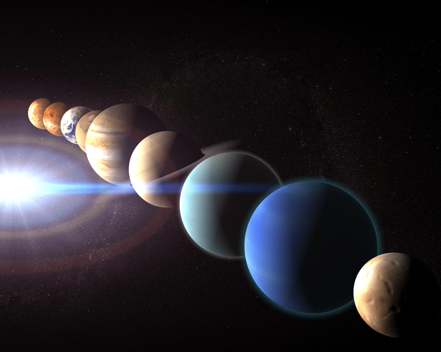
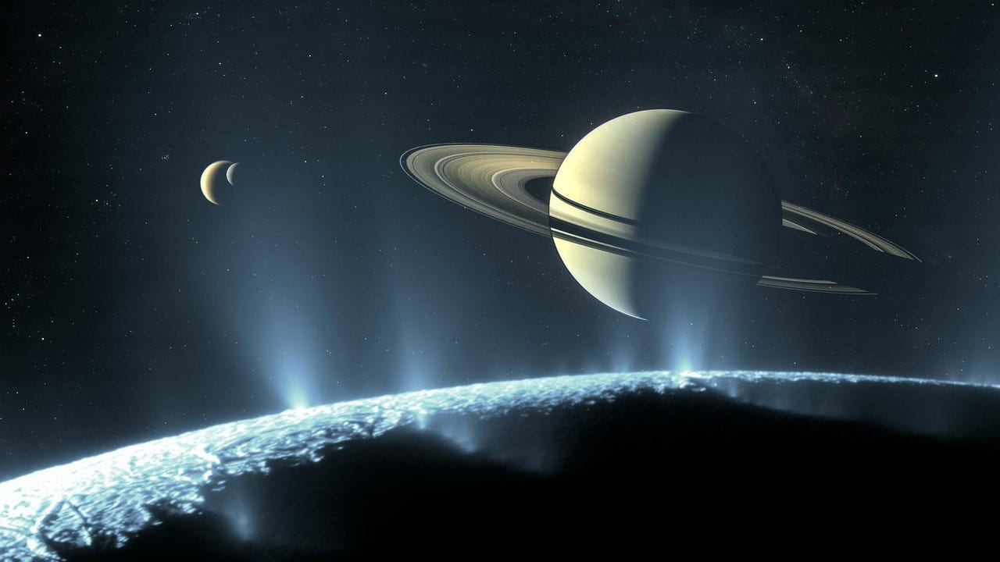
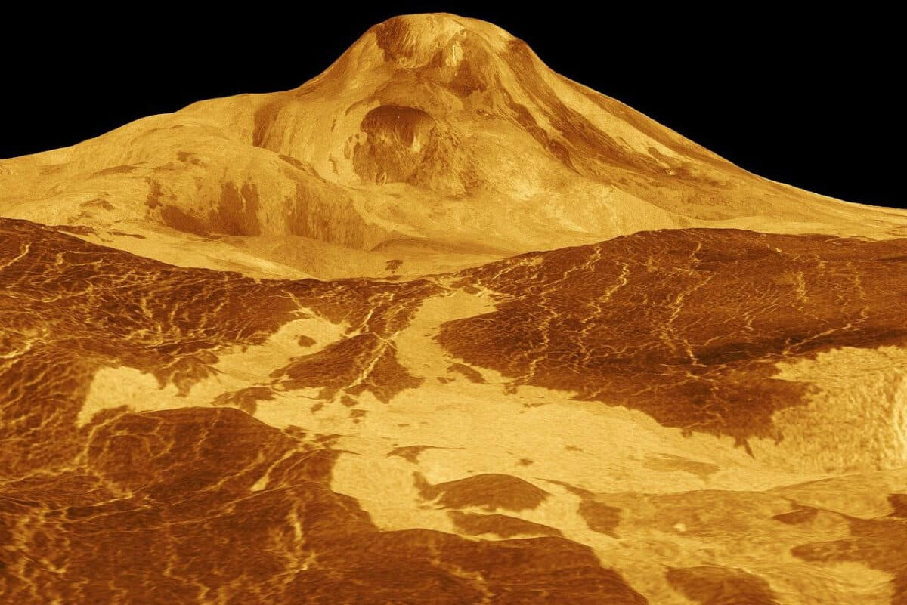

Alineación planetariaFecha clave: madrugada del 18 de abril de 2026. Planetas involucrados: Mercurio, Marte, Saturno y Neptuno. Fenómeno: se verán casi en línea recta en el cielo, creando un “desfile planetario”. Visibilidad: mejor justo antes del amanecer; se recomienda observar desde lugares con poca contaminación lumínica. |
 |
|
 |
Nuevas lunas descubiertasHallazgo: se identificaron 128 lunas nuevas alrededor de un planeta del sistema solar, superando incluso el número de satélites de Júpiter. Impacto científico: este descubrimiento cambia la forma en que entendemos la dinámica de los sistemas planetarios. |
Geología de VenusDescubrimiento: se encontró una cueva volcánica en Venus, lo que reescribe parte de la ciencia planetaria. Relevancia: sugiere que la actividad geológica de Venus es más compleja de lo que se pensaba, abriendo nuevas líneas de investigación. |
 |